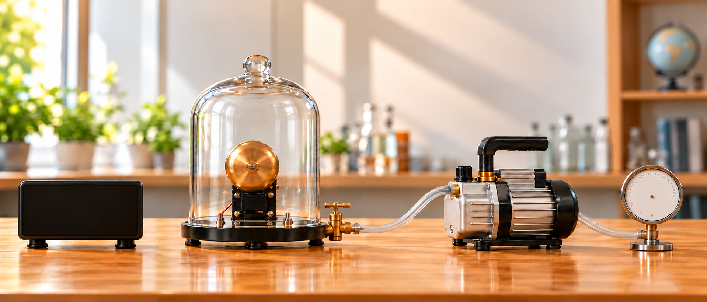

追蹤鐘聲，認識聲音的傳播
五個學習區塊・一個單元小測聲音從振動產生
看見發聲時的物體撥動鋼尺時，聲音是怎麼出現的？
阿公拿出桌邊的鋼尺，讓小葵觀察它發出聲音時的狀態。
尺一邊發出聲音，一邊抖得好快，聲音跟它在動有關嗎？
我們來撥動鋼尺，再用手按住它，看看聲音和它的動作會怎麼變。
你看，鋼尺來回振動時，就會發出聲音。用手按住後，振動減弱，聲音也會變小；當鋼尺停止振動，聲音就停了。
聲音如何傳播
從聲源到耳膜鐘聲是怎麼傳到耳朵的？
觀察空氣的疏密變化，如何從鐘傳到耳膜。
鐘離我這麼遠，聲音是怎麼傳到我耳朵裡的？
鐘振動時，會帶動附近的空氣，讓空氣產生疏密變化。這些變化會一段一段傳到耳邊，帶動耳膜振動。
重點：粒子在原位附近來回振動，疏密變化向前傳播；粒子的振動方向與聲音傳播方向平行。
粒子位移放大、過程放慢呈現；鐘聲對應右側耳朵收到聲音的時刻。空氣中的聲音是縱波。
聲音需要介質
觀察抽氣時聲音的變化動手抽氣，鈴聲會怎麼變？
操作幫浦與進氣閥，比較空氣量改變時的鈴聲。
如果電鈴還在振動，可是周圍沒有空氣，我還聽得到鈴聲嗎？
試著抽氣，邊聽鈴聲、邊看敲錘，再放入空氣比較。留意電鈴的動作，以及聲音傳到罩外時的變化。

點按幫浦抽氣，或打開進氣閥讓空氣回來；再次點按可停在當下觀察。
先開啟電鈴，再抽氣比較聽到的鈴聲。
重點：聲音需要介質傳播。抽氣後電鈴仍在振動，傳到罩外的鈴聲會變弱；理想真空中沒有介質，聲音無法傳播。
振動放大示意；分貝值非現場實測。實際鐘罩僅能接近真空。
介質影響聲速
比較空氣、水與鋼聲音在不同介質中，傳得多快？
觀察相鄰粒子如何逐段受振，再比較終點的到達時間。
阿公，除了空氣，還有其他介質能傳聲音嗎？
有，水和鋼也能傳聲音。我們可以讓聲音傳過相同的距離，看看在不同介質裡，到達的時間有什麼不同。
相鄰粒子依序往返，傳遞擾動；下方綠色刻度只記錄已傳到的位置。
觀察結果
| 組別 | 聲速 | 傳到 5,000 公尺 |
|---|
原來不只空氣能傳聲音，水和鋼也可以！而且聲音在這三種介質裡，傳播的速度還不一樣呢！
溫度影響聲速
只改變空氣溫度溫度不同，聲音傳到哪裡了？
同時敲擊，比較 0°C 與 80°C 空氣中的傳播進度。
一組 0°C，一組 80°C，我們同時敲音叉看看！
兩組都是空氣、距離也相同，只比較溫度的差異。
觀察結果
原來同樣是空氣，溫度較高時，聲音傳得比較快。
單元小測
煙火離你多遠？
煙火的亮光幾乎立刻到達，聲音卻要花時間傳來。利用這段時間差和當時的氣溫，估算煙火離你多遠。
 觀察位置
觀察位置
此處可忽略光的傳播時間；估算的是煙火爆炸點到觀察者的直線距離。